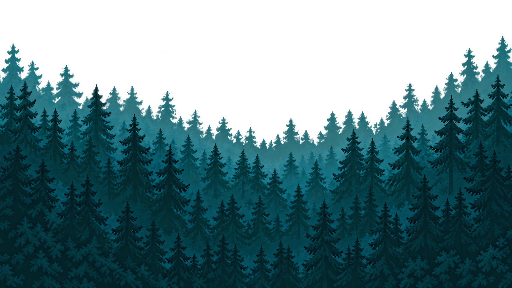

Nov 9, 2026 - Nov 15, 2026 (Sample Week)
Sunny Mimu
RPCE-MFA
Form
- Rest
- 100%
- Feelings
- 75%
- Pressure
- 25%
- Energy
- 100%
Context
- Movement
- 75%
- Food & drinks
- 100%
- Access
- 75%
AI description & recommendation
Unavailable in this demo.

Nov 9, 2026 - Nov 15, 2026 (Sample Week)
RPCE-MFA
Unavailable in this demo.
Nov 9, 2026 - Nov 15, 2026
28 numeric answers | 0 Not sure
Sample week
1How often did you wake up feeling rested?
Always
2How often did you feel sleepy during daytime activities?
Never
3How often was it difficult to stay awake when you needed to?
Never
4How often did sleepiness make it hard to concentrate?
Never
5How often did you find moments that felt good?
Often
6How often did you feel low or discouraged?
Rarely
7How often did you enjoy something you were doing?
Often
8How often did your feelings feel difficult to put into words?
Rarely
9How often did things feel like a lot to carry?
Rarely
10How often did you feel rushed?
Rarely
11How often could you take a pause when you needed one?
Often
12How often was it difficult to switch off from your worries?
Rarely
13How often did you have energy for everyday things?
Always
14How often did you feel worn out?
Never
15How often did you have energy for something you enjoy?
Always
16How often did a small task feel like a big effort?
Never
17How often could you move in a way that felt comfortable?
Often
18How often did you take a break from staying in one position?
Often
19How often did movement feel tiring?
Rarely
20How often could you choose the pace that suited you?
Often
21How often did you have a chance to eat when you were hungry?
Always
22How often did you drink water during the day?
Always
23How often did your routine make it difficult to eat regularly?
Never
24How often could you take a moment to enjoy a meal or drink?
Always
25How often could you reach someone when you wanted support?
Often
26How often did you have a quiet place to pause?
Often
27How often could you get the everyday things you needed?
Often
28How often did you feel connected to someone?
Often
Sample data for trying the weekly check-in.
Nov 9, 2026 - Nov 15, 2026 (Sample Week)
RPCE-MFA
Unavailable in this demo.
Nov 9, 2026 - Nov 15, 2026
Sample week
Well-rested and ready to wander. A little sunshine, with room to breathe.
RPCE-MFA | medium build
Nov 2, 2026 - Nov 8, 2026
Sample week
A rested head and a happy heart. Taking the scenic route this week.
RPCD-HIB | slender build
Each result keeps its own assessment and profile versions. Differences can reflect a different release or measurement context.

Answer the check-in to meet this week’s Mimu. You can see your result before logging in.
Nov 16, 2026 - Nov 22, 2026 (Unsaved)
RPTD-MFB

Unavailable in this demo.
Your current result is available as a guest. A test account lets you save weeks and try the full dashboard with editable sample history.
Nov 16, 2026 - Nov 22, 2026 (Saved)
RPTD-MFB
Nov 16, 2026 - Nov 22, 2026
Weekly code: RPTD-MFB
Your check-in
Rested and finding the bright spots, but a busy week has turned your spark down low.
Default artwork is shown. Profile information is incomplete. This is the default appearance.
Movement, Food & drinks and Access describe this week without changing Mimu’s form or build.
Demo questionnaire points. The questions, weights, and artwork rules are provisional. Weekly context pairs summarize your responses. They do not select Mimu’s form or build and are not health grades.
Nov 9, 2026 - Nov 15, 2026 (Sample Week)
RPCE-MFA
Unavailable in this demo.
Start with Rest, then select other categories to compare across your loaded weeks. Percentages describe responses. Higher Pressure reflects more reported pressure.
This test account includes sample weeks. Outlined points are samples; filled points are your check-ins.
Lines stop at missing weeks, unresolved values, assessment changes and the boundary between sample and user-created weeks.
Sample week | RPCE-MFA